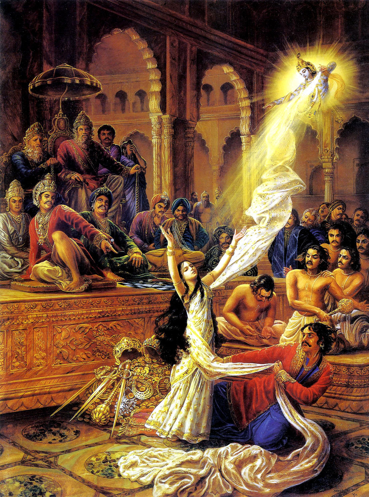

Role of Draupadi in the Mahabharata
Draupadi was considered one of the most important characters in the Mahabharata, directly responsible for the win of good over evil. She single-handedly kept the five Pandava brothers together as she was married to all of them, and brought to light the terrible nature of the "evil" clan, the event that ultimately led to the final Mahabharata fight.
Draupadi's Five Husbands
Draupadi's marriage with her five husbands allowed the family to stay together despite arguments that arose through hardships and challenges. By staying loyal and together, the brothers were able to utilize their combined strength during the final war against evil and did not work against each other.Draupadi's Humiliation
 The oldest of the Pandava brothers, Yudhishthira, had a deep gambling addiction. One day when playing with Dushasana, a member of the evil team, he kept loosing and continued to gamble away his life's earnings. When out of money, he began to gamble his chariots, kingdom, and finally, the only thing he had left, his wife. Draupadi fought for her privacy and rights, but the evil side refused to listen and, in a show of power and greed, began disrobing her in front of all elders in the court. She prayed to her best friend, Lord Krishna, who protected her by providing her infinite cloth on her dress. Draupadi's desperate plea for justice in this moment not only saves her dignity (through divine intervention) but also sets the stage for the eventual war between the Pandavas (good) and Kauravas (evil).This incident highlights Draupadi's role as a catalyst for action. Her public humiliation becomes a rallying point for the Pandavas, fueling their determination to reclaim their lost kingdom and honor. Draupadi's vow to leave her hair unbound until it can be washed in Dushasana's blood serves as a constant reminder of the injustice they faced, keeping the flames of vengeance alive throughout the years.